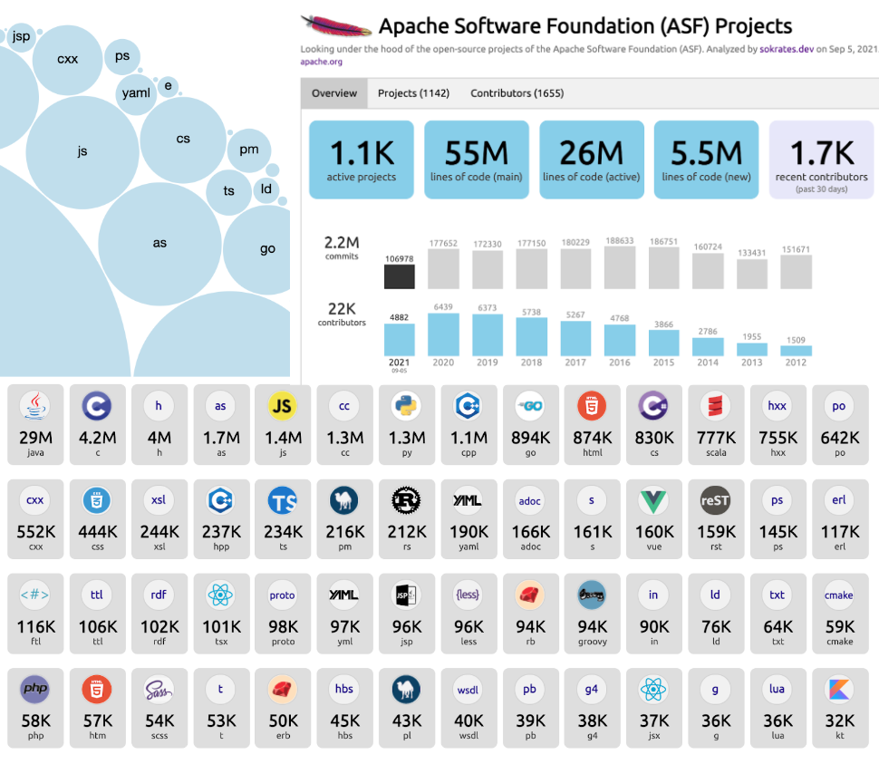
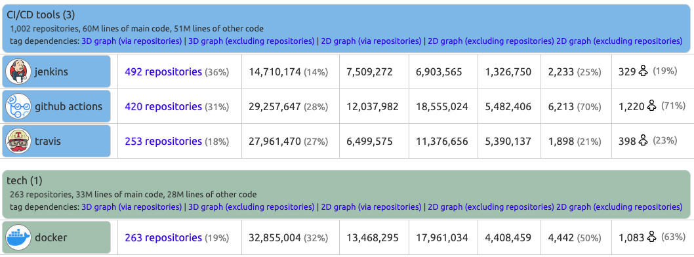

Data Foundation

IN THIS SECTION, YOU WILL: Understand how to use diverse data sources to support architecture decision-making processes and get concrete tips on creating architecture-centric data tools.
KEY POINTS:
- The architecture Data Foundation serves as a medium to create a complete, up-to-date picture of critical elements of the technology landscapes of big organizations.
- The Data Foundation provides an architecture-centric view of data about a technology landscape based on source code analyses, public cloud billing reports, vibrancy reports, or incident tickets.
- To facilitate the creation of a Data Foundation, I have been working on creating open-source tools that can help obtain valuable architectural insights from data sources, such as source code repositories.
“If we have data, let’s look at data. If all we have are opinions, let’s go with mine.” -— Jim Barksdale
I strongly emphasized data in every place I worked on creating architectural functions. Moreover, in the past several years, I have been working on creating open-source tools, such as Sokrates, that can help obtain valuable architectural insights from data sources, such as source code repositories or public cloud billing reports. Consequently, one of the first steps I make in any architecture practice is to create an architecture Data Foundation to get a complete, up-to-date picture of critical elements of the technology landscapes of an organization (Figure 1). Manual documentation does not scale, and relying on data ensures the reliability and scalability of decision-making.
 Figure 1: The structure of Grounded Architecture: The Data Foundation.
Figure 1: The structure of Grounded Architecture: The Data Foundation.
The good news is that big organizations have lots of data that, if used wisely, can provide an excellent basis for an architectural Data Foundation. With some automation and curation, getting a good overview of the technology landscape may be closer than it initially appears.
Requirements For A Data Foundation
A Data Foundation should be a central place with authoritative, relevant, and curated data about the organizational technology landscape. Technically, you can implement Data Foundation using simple tools like Google Drive, with documents organized in folders or as an internal website. I recommend investing some effort in creating better infrastructure and user experience, as it can enable more people to access and benefit from data.
Simply collecting and putting data in one place will not create any value. Regardless of how you implement your Data Foundation, with papers on the wall, in Google Drive, in Confluence, or with a nicely designed internal website, I have identified the following requirements that a Data Foundation needs to implement:
- It is the single point of truth for all relevant architectural data. People should be able to go to one place and get the most relevant data.
- It is curated for quality so people can trust the data. Simply dumping data into one place will not help. You need to own curation to ensure that data are correct. You also should provide links to data sources so people can verify the facts.
- It is curated for usability so people stay focused on valuable details. You must filter out useless or less relevant details, focusing on the essence. Investing in the UX design of documents or tools you create helps.
- It is kept up to date, ideally in an automated fashion (or in a semi-automated repeatable way).
- It is accessible to the whole organization. I genuinely believe that when you give employees access to information generally reserved for specialists, architects, or “higher levels,” they get more done independently. They can work faster without stopping to ask for information and approval. And they make better decisions without needing input from architects or the top.
- It is used in decision-making. Having nicely curated and valuable data has zero value if you cannot ensure that such data inform vital decisions.
“When a measure becomes a target, it ceases to be a good measure” -Charles Goodhart
My view of a Data Foundation differs from a goal-setting framework or a control board. My vision for building the Data Foundation follows the map-making metaphor. Maps are one of the most critical documents in human history. They give us tools to store and exchange knowledge about space and place. While there are differences between maps and the layers they show, the one thing that all maps do is provide readers with orientation. A sense of place is central to meaning-making. Maps are also composed of multiple layers. Similarly, the architecture Data Foundation should give readers a sense of orientation, offering data layers about systems that describe their sizes, connections, quality, security, or human activity.
Examples of Data Foundation Sources and Tools
To illustrate what I mean by Data Foundation, I will give a few concrete examples from my recent work. Data I typically used include (Figures 2 and 3):
- Source code, which contains an incredible amount of information about technology, people’s activity, team dependencies, and the quality of software systems.
- Public cloud billing reports, which provide an overview and trends about used cloud services, regions, and budgets.
- Incident reports, which can reveal trends and dependencies among incidents.
- Key business metrics, like vibrancy, which can show user activity on our systems.
- Messaging and collaboration platforms (such as Slack) activity reports, which can help understand discussion topics and team interactions.
In the following sections, I detail several of these architectural data-driven tools.

Figure 2: A screenshot of the start page of the architecture data dashboard we’ve built and used at AVIV Group.

Figure 3: A screenshot of the start page of the architecture data dashboard we’ve built and used at eBay Classifieds.
Example 1: Source Code and Commit History
I have repeatably found the source code to be an excellent basis for creating data-driven architecture documentation. Source code and its commit history include an astonishing amount of information about technology, people activity, team dependencies, and the quality of software systems. As mentioned earlier in this chapter, I have started and still actively maintain the project Sokrates, with the idea to help further extract data from source code that can help my work as an architect. I use Sokrates daily, improving it on the way.
I have designed Sokrates from an architect’s point of view, enabling quick zooming in and out into source code landscapes. On the one hand, Sokrates provides a high-level view of the IT landscape, summarizing data from all teams and groups. At the same time, you can zoom in on the details of particular systems to the code level. That means you can use the same tools to have CTO-level discussions looking at overall trends in technology usage and costs. At the same time, I could engage with developers and discuss concrete code fragments and potential improvements in the code level (e.g., duplicated blocks, complex units, dependencies).
The Appendix at the end of this section shows examples of some insights from source code analyses with Sokrates. For more complex examples of insights that Sokrates generates from source code, take a look at Sokrates examples, with analysis of complex open-source landscapes, such as:
- Apache Software Foundation Repositories, with aggregated multi-level analysis of more than 1,000 repositories with more than 180 million lines of code, more than 22,000 historical contributors, and 2.4 million commits.
- Facebook/Meta OSS Repositories, with aggregated multi-level analysis of around 800 repositories with 120 million lines of code, more than 20,000 historical contributors, and more than 2 million commits.
- Microsoft OSS Repositories, with aggregated multi-level analysis of more than 2,400 repositories with more than 100 million lines of code, more than 18,000 historical contributors, and more than 1.2 million commits.
- Google OSS Repositories, with aggregated multi-level analysis of more than 1,600 repositories with more than 200 million lines of code, more than 27,000 historical contributors, and more than 2.4 million commits.
- Linux Source Code, with aggregated multi-level analysis of 178 Linux repository sub-folders with more than 23 million lines of code, more than 17,000 historical contributors, and more than 1.7 million commits.
- Amazon OSS Repositories, with aggregated multi-level analysis of more than 2,700 repositories with more than 130 million lines of code, more than 13,000 historical contributors, and more than 600,000 commits.
In addition to standard source code and commit history analyses, I also have built several special source code analyses to get further details:
- Travis and Jenkins analyzers to understand how teams build CI/CD pipelines.
- Dockerfile scan to create a tech radar of runtime technologies.
- GitHub API pull requests analyses to identify deployment frequency.
And I encourage you to experiment with your source-code analyses.
Example 2: Public Cloud Usage
Migrating to the public cloud can dramatically increase transparency thanks to uniform automation and monitoring. The public cloud transparency offers incredibly valuable data out-of-the-box.
Amazon Web Services (AWS), Google Cloud Platform (GCP), Microsoft Azure, and other Public Cloud Providers give detailed data about which platform uses which services, resource family, and budget. You can also understand which people and teams have access to each service. Getting real-time information about cloud usage and automatically understanding the trends is straightforward.
Figure 4 shows the anonymous screenshot of the Cloud usage explorer, a tool I built to visualize automatically-collected data from standard Google Cloud Platform (GCP) usage reports.

Figure 4: An example of a cloud usage explorer.
Example 3: Financial and Vibrancy Data
Finance departments are very data-driven and have high-quality data that could be relevant for architects. In addition to standard costs, budgets, and other pure financial data types, I frequently found that finance teams also have different data sources, such as vibrancy or usage levels. These teams need such data to, for instance, correlate finance performance with usage levels. Such usage data are beneficial for architecture discussions. For example, linking usage levels and vibrancy of systems with their public cloud costs can identify areas of improvement and inefficiencies (Figure 5).
Figure 5: Combining data from a different source (e.g., cloud billing reports and vibrancy or revenue can lead to new insights (e.g., identifying inefficiencies in the application portfolio).
Building Data Foundation
While each organization will have its unique sets of data, here are some tips I found helpful in forming the architecture Data Foundation:
- Start with the source code. My motto is “Talk is expensive. Show me the code.” I scan as soon as possible all source code using tools such as Sokrates. I highly recommend Sokrates as the basis for the Data Foundation, but other simple analyses could also provide a good starting point. Modern IT enterprises store almost everything as a code. It is the richest and most up-to-date documentation on most things happening in an IT enterprise. I have repeatedly found that people underestimate the size and complexity of organizations and legacy systems. Quick source code scans can reveal such misconceptions, providing a better alternative for long-term tracking of an organizational IT landscape.
- Connect with finance and governance teams. My second motto is “Follow the money!”. Get exports of finance data (without sensitive parts, such as revenue projections). Cloud billing reports and data about vibrancy or revenue streams are collected anyway. By extracting more technology-oriented data (e.g., public cloud technology usage trends) and connecting them to other data, you can obtain many new insights without starting new processes or asking people to provide more details. First, leverage what you have, squeeze all the value from it, then ask people for any missing elements. In addition, critical exploration of finance data can also benefit finance teams, for instance, by discovering some unused expensive licenses of contracts.
- Maintain a culture of transparency. Sharing fewer data with everyone is much simpler and more effective than having more data, but you need complex authorization mechanisms.
- Own the curation. People need to be able to trust your data. Spend enough time to understand data sets, curate them, and ensure presentation consistency. I consider myself a master curator and chief UX designer of a Data Foundation.
- Use simple and easy-to-maintain infrastructures. For example, I publish the results of Sokrates analyses and other data tools as static resources in our enterprise GithHub pages. Configuring more complex infrastructure with complex databases and backend software requires more maintenance. In the Architecture Dashboard Examples repository, you can find the source code of examples of how to build the Architecture Data Dashboard in such a way. The dashboard is a simple static website generated from JSON files and published via GitHub pages.
Using Architecture Data Foundation
The Data Foundation can provide lots of data. Sometimes, as in an ordinary map or atlas, such data could be helpful for those who want to orient themselves and understand the context. But with a proper mindset, you can obtain more insights from such data.
Finding the right ways to interpret and use data requires active effort. In other words, the data can give you the answers, but you need to bring questions. Here are some of the questions you can ask when you have data:
- Are we aligned and going in the same direction? Source code overviews, public cloud usage explorers, or tech radars can highlight differences among systems and teams and trigger discussions and actions.
- Are we using technology optimally? Comparing usage trends between teams can show interesting outliners (both positive and negative).
- Are there indicators of poor code quality? Too large systems, duplication, long units, or long files.
- Productivity trends: is more really more or is more actually less? For instance, comparing the number of git merges with the number of developers can indicate if our dev processes are scalable. When we scale up teams, we want to speed up our delivery (but if team structure is not proper, it can easily be the opposite as people “step on each other toes”).
- Do we collaborate in the way we want? Repository analysis can point out team topologies and (un)desired dependencies.
- Do we work on the things we want? We may want to focus more on innovations, but in reality, we may spend too much time on legacy maintenance.
Appendix: Examples of Insights From Source Code Analyses
Figures 6 to 10 show some insights from source code analyses with Sokrates.

Figure 6: Sokrates can instantly create a helicopter view of the technology landscape, programming languages, active contributors, and commit trends.

Figure 7: Sokrates can show detailed code and contributors’ trends per repository, enabling zooming in each repository up to the code level.

Figure 8: Sokrates can create a tech radar by tagging projects with identified technologies.

Figure 9: Sokrates can show contributor trends, distribution of “veterans” and “rookies,” and dependencies between people and repositories, enabling zooming in into patterns of the contribution of individual contributors.

Figure 10: Sokrates can reveal the team topologies by plotting 2D and 3D graphs of dependencies that people create through working on the same repositories in the same period.
Questions to Consider
Using data can significantly improve the efficiency and impact of architectural practice. But there are no simple tools that can instantly provide you insights. Ask yourself the following questions:
- Have you considered using open-source tools like Sokrates to gain architectural insights from data sources? Why or why not?
- What are your views on the reliability and scalability of manual documentation?
- What steps would you take to create an architecture Data Foundation in your organization?
- Are there untapped data sources within your organization that could inform your architectural decisions?
- How could you automate gathering data for architectural insights in your organization?
- What examples can you provide of the data you’ve used to gain reliable information about technology in your organization?
- How would you examine public cloud billing reports, incident reports, or key business metrics for architectural insights?
- How can you ensure your data is reliable and up-to-date?
- Do you collaborate with finance and governance teams to incorporate financial and vibrancy data into your data analysis?
- Is there a culture of transparency in your organization?
Structure ← Grounded Architecture: Introduction |
Structure People Foundation → |